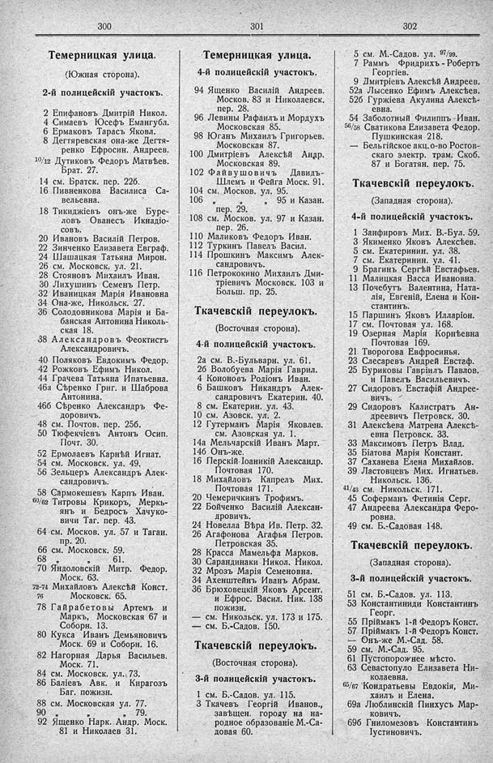

Лист источника 232
Скан

Распознанный текст
300
Темерницкая улица.
(Южная сторона).
2-й полицейскій участокъ.
2 Епифановъ Дмитрій Никол.
4 Симаевъ Юсефъ Емангубл.
6 Ермаковъ Тарасъ Яковл.
8 Дегтяревская она-же Дегтя-
ренко Ефросин. Андреев.
10/12 Дутиковъ Федоръ Матвѣев.
Брат. 27.
14 см. Братск. пер. 22б.
16 Пивненкова Василиса Са-
вельевна.
18 Тикиджіевъ онъ-же Буре-
ловъ Ованесъ Икнадіо-
совъ.
20 Ивановъ Василій Петров.
22 Зинченко Елизавета Евграф.
24 Шашацкая Татьяна Мирон.
26 см. Московск. ул. 21.
28 Стояновъ Михаилъ Иван.
30 Лихушинъ Семенъ Петр.
32 Иваницкая Марія Ивановна
34 Она-же, Никольск. 27.
36 Солодовникова Марія и Ба-
банская Антонина Николь-
ская 18.
38 Александровъ Феоктистъ
Александровичъ.
40 Поляковъ Евдокимъ Федор.
42 Рожковъ Ефимъ Никол.
44 Грачева Татьяна Ипатьевна.
46а Сѣренко Григ. и Шаброва
Антонина.
46б Сѣренко Александръ Фе-
доровичъ.
48 см. Почтов. пер. 25б.
50 Тюфекчіевъ Антонъ Осип.
Почт. 30.
52 Ермолаевъ Карнѣй Игнат.
54 см. Московск. ул. 49.
56 Зельцеръ Александръ Алек-
сандровичъ.
58 Сармокешевъ Карпъ Иван.
60/62 Титровы Крикоръ, Меркь-
янъ и Бедросъ Хачуко-
вичи Таг. пер. 43.
64 см. Москов. ул. 57 и Таган.
пр. 20.
66 см. Московск. 59.
68 „ „ 61.
70 Яндоловскій Митр. Федор.
Моск. 63.
72-74 Михайловъ Алексѣй Конст.
76 Московск. 65.
78 Гайрабетовы Артемъ и
Маркъ, Московская 67 и
Соборн. 13.
80 Кукса Иванъ Демьяновичъ
Моск. 69 и Соборн. 16.
82 Нагорная Дарья Васильев.
Моск. 71.
84 см. Московск. ул. 73.
86 Баліевъ Авк. и Кирагозъ
Баг. пожизн.
88 см. Московская ул. 77.
90 „ „ „ 79.
92 Ященко Нарк. Андр. Моск.
81 и Николаев 31.
301
Темерницкая улица.
4-й полицейскій участокъ.
94 Ященко Василій Андреев.
Москов. 83 и Николаевск.
пер. 28.
96 Левины Рафаилъ и Мордухъ
Московская 85.
98 Юганъ Михаилъ Григорьев.
Московская 87.
100 Дмитріевъ Алексѣй Андр.
Московская 89.
102 Файвушовичъ Давидъ-
Шлемъ и Фейга Моск. 91.
104 см. Москов. ул. 95.
106 „ „ 95 и Казан.
пер. 29.
108 см. Москов. ул. 97 и Казан.
пер. 26.
110 Маликовъ Федоръ Иван.
112 Туркинъ Павелъ Васил.
114 Прошкинъ Максимъ Алек-
сандровичъ.
116 Петрококино Михаилъ Дми-
тріевичъ Московск. 103 и
Больш. пр. 25.
Ткачевскій переулокъ.
(Восточная сторона).
4-й полицейскій участокъ.
2а см. В.-Бульварн. ул. 61.
2б Волобуева Марія Гаврил.
4 Кононовъ Родіонъ Иван.
6 Башковъ Никандръ Алек-
сандровичъ Екатерин. 40.
8 см. Екатерин. ул. 43.
10 см. Азовск. ул. 2.
12 Гутерманъ Марія Яковлев.
см. Азовская ул. 1.
14а Мельчарскій Иванъ Март.
14б Онъ-же.
16 Перскій Іоаникій Александр.
Почтовая 170.
18 Михайловъ Капрелъ Мих.
Почтовая 171.
20 Чемеричкинъ Трофимъ.
22 Бойченко Василій Алексан-
дровичъ.
24 Новелла Вѣра Ив. Петр. 32.
26 Агафонова Агафья Петров.
Петровская 35.
28 Красса Мамельфа Марков.
30 Сарандинаки Никол. Никол.
32 Мрозъ Марія Семеновна.
34 Ахенштейнъ Иванъ Абрам.
36 Брюховецкій Яковъ Арсент.
и Ефрос. Васил. Ник. 138
пожизн.
— см. Никольск. ул. 173 и 175.
— см. Б.-Садов. 150.
Ткачевскій переулокъ.
(Восточная сторона).
3-й полицейскій участокъ.
1 см. Б.-Садов. ул. 115.
3 Ткачевъ Георгій Иванов.,
завѣщен. городу на на-
родное образованіе М.-Са-
довая 60.
302
5 см. М.-Садов. ул. 97/99.
7 Раммъ Фридрихъ - Робертъ
Георгіев.
9 Дмитріевъ Алексѣй Андреев.
52а Лысенко Ефимъ Алексѣев.
52б Гуржіева Акулина Алексѣ-
евна.
54 Заболотный Филиппъ-Иван.
56/58 Сватикова Елизавета Федор.
Пушкинская 218.
— Бельгійское акц. о-во Ростов-
скаго электр. трам. Скоб.
87 и Богатян. пер. 75.
Ткачевскій переулокъ.
(Западная сторона).
4-й полицейскій участокъ.
1 Занфировъ Мих. В.-Бул. 59.
3 Якименко Яковъ Алексѣев.
5 см. Екатеринин. ул. 38.
7 см. Екатеринин. ул. 41.
9 Брагинъ Сергѣй Евстафьев.
11 Малицкая Васса Ивановна.
13 Почебутъ Валентина, Ната-
лія, Евгеній, Елена и Кон-
стантинъ.
15 Паршинъ Яковъ Илларіон.
17 см. Почтовая ул. 168.
19 Озерная Марія Корнѣевна
Почтовая 169.
21 Творогова Евфросинья.
23 Слесаревъ Андрей Евстаф.
25 Буриковы Гавріилъ Павлов.
и Павелъ Васильевичъ.
27 Сидоровъ Евстафій Андрее-
вичъ.
29 Сидоровъ Калистратъ Ан-
дреевичъ Петровск. 30.
31 Алексѣева Матрена Алексѣ-
евна Петровск. 33.
33 Максимовъ Петръ Влад.
35 Біатова Марія Констант.
37 Саханева Елена Михайлов.
39 Ластовцевъ Мих. Игнатьев.
Никольск. 136.
41/43 см. Никольск. 171.
45 Соферманъ Фетинія Серг.
47 Андреева Александра Феро-
ровна.
49 см. Б.-Садовая 148.
Ткачевскій переулокъ.
(Западная сторона).
3-й полицейскій участокъ.
51 см. Б.-Садов. ул. 113.
53 Константиниди Константинъ
Георг.
55 Пріймакъ 1-й Федоръ Конст.
57 Пріймакъ 1-й Федоръ Конст.
— Онъ-же М.-Сад. 58.
59 см. М.-Сад. 95.
61 Пустопорожнее мѣсто.
63 Севастопуло Елизавета Ни-
колаевна.
65/67 Кондратьевы Евдокія, Ми-
хаилъ и Елена.
69а Люблинскій Пинхусъ Мар-
ковичъ.
69б Гниломезовъ Константинъ
Іустиновичъ.